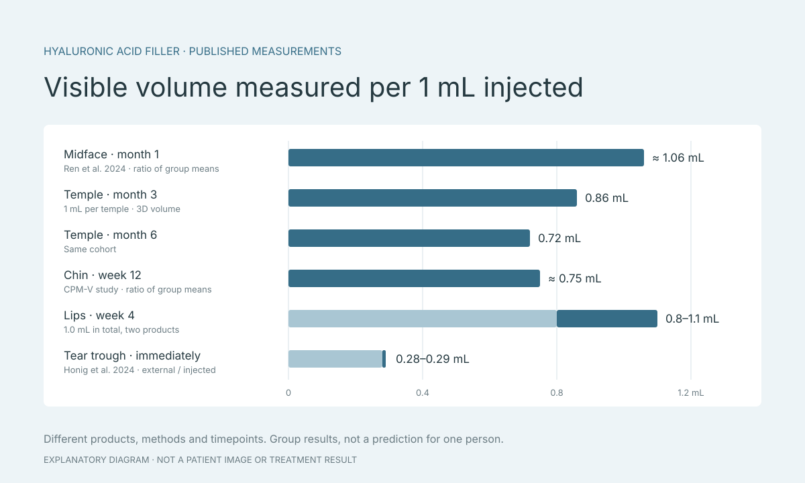

What does 1 cc of filler do? Measured volume by facial area
How much does 1 cc of filler change a face? No single number answers it. One cc is one millilitre, or 1,000 cubic millimetres of gel, but studies measure different things after an injection: how much the skin’s surface rises in volume, how far a point moves in millimetres, an angle, or a visual score. This guide gathers figures from hyaluronic acid (HA) filler studies by facial area, to help you prepare questions for a physician. It is not advice on how much to inject.

Key points
- One cc is a volume of gel; it does not tell you how far the skin projects.
- Measured volume per 1 mL ranges from 0.28 under the eyes immediately after injection to 2.09 in the cheeks at month 1 in a small study.
- A group average is not an individual prediction; a physician decides the right amount.
What 1 cc is, and the many ways “results” are measured
One cc is the volume of gel injected. It does not say how many millimetres the skin will project. Each study chooses its own measure: some compare 3D scans for the volume the surface gained, some measure how far the lip border moves forward, some measure angles or use rating scales. A figure from one kind of measurement cannot stand in for another.
Most figures here are group averages for the product, technique and time point a study set. Some are ratios worked out from a study’s published means, such as measured volume divided by injected volume; each is marked as such. A group average is not a prediction for any one person.

- Surface volume gained (mL), from 3D images before treatment and after treatment
- Projection (mm), at a point or line the study defines
- An angle or a score, such as the angle between forehead and nose, or a visual scale
Cheeks and midface: measured volume close to, or above, what was injected
In a randomized trial by Ren et al. (2024), 111 treated Chinese participants were compared with 37 controls. They received Restylane Volyme, 3.4 mL in total on average. 3D imaging measured a mean surface-volume gain of 3.6 mL at month 1, reported as stable to month 12. The ratio of those means is about 1.06 mL measured for every 1 mL injected.
A split-face study of two products in 11 participants injected a mean 1.5 and 1.6 mL at first. Month-1 volume gains were 2.97 and 3.10 mL, with mean individual ratios of 2.09 and 1.94. By month 12, after touch-ups bringing the mean to 1.9 mL per side, gains were 2.07 and 2.08 mL. The sample was small and the under-eye changed as well. Together the two studies show that the ratio varies with product and time; neither says how many millimetres a cheek projects per cc.
Lips: 1 mL split between both lips, with wide individual variation
Rho et al. (2022) studied 36 Korean women who received 1.0 mL in total, 0.4 mL in the upper lip and 0.6 mL in the lower, with no touch-up. At week 4, external lip volume had risen by a mean 0.8 ± 0.45 and 1.1 ± 0.81 mL with the two products, and by 0.6 and 0.8 mL at week 12.
At week 4 the upper lip border moved forward by a mean 0.7 to 1.1 mm and the lower border by 0.8 to 0.9 mm, but the standard deviations were close to or larger than the means: some people changed much less, others much more. These are results of treating both lips together, not of 1 mL in one lip.
Chin and jawline: figures from treatments of several millilitres
A chin study of 121 participants used Belotero Volume, 3.33 mL in total on average. Twelve weeks after the last treatment, 3D chin volume had increased by a mean 2.493 mL (95% confidence interval 2.134–2.852), a ratio of means of about 0.75. The observed values spread widely, with a standard deviation of 1.867 mL: the narrow interval describes the precision of the group mean, not the range one person will see.
A smaller study of 14 adults with a mean chin dose of 2.86 mL reported 79.8% maintained at day 30 and 62.1% at day 90, relative to the volume measured on day 14 rather than the gel injected. For the jawline, the FDA dossier for VOLUX XC reports a median initial dose of 4.35 mL and, at month 6, a mean linear-depth change of 4.6 mm and a 6.0 cc jawline-profile volume change: the result of a treatment across several points, not of 1 cc.
Reference:
Temples, under-eye and nose: measured in different ways
In a study of 25 women given 1 mL per temple, 3D volume averaged 0.86 mL at month 3 and 0.72 mL at month 6, while the ruler-measured depth of the hollow went from 4.33 to 0.71 and then 1.62 mm. A randomized trial of VYC-20L reported a median 3.65 mL for both temples combined, and a mean gain of 1.1 cc per temple at month 1 and 0.8 cc at month 6.
The under-eye area is small and hard to measure. Honig et al. (2024) injected a mean 0.88 mL per side; immediately afterwards, the surface volume changed by only 0.28–0.29 times the injected volume, and the direction of the person’s gaze changed the measured values. For the nose, a study with a mean dose of 0.85 mL reported a mean 4.48-degree change in the angle between forehead and nose: an angle, which cannot be turned into millimetres without each person’s facial shape.
Reference:
- Efficacy, Safety, and Longevity of HA Filler in Treating Temple Hollowness (2024)
- Improvement in Temple Hollowing with VYC-20L Hyaluronic Acid Filler (2025)
- Honig et al. (2024): 3D volume of tear-trough filler over time — Aesthetic Surgery Journal Open Forum
- An 18-Month Prospective Evaluation of YYS 720 HA Filler for Nasal and Chin Augmentation (2026)
Why 1 cc does not give the same result everywhere
The figures differ for many reasons at once: the product, the tissue layer, the total dose, touch-ups, when the measurement was taken, early swelling, facial expression during measurement, and the method. For nasolabial folds, marionette lines, the forehead and under the chin, the studies reviewed give no figure that isolates the effect of 1 cc in millimetres.
Use these figures to start questions, not to decide a dose. The right amount and placement depend on a physician’s examination, your facial structure, your treatment history and your individual risks.
- Which product is proposed, and what did its studies measure?
- What amount does the physician suggest for this area, and why?
- At what time after injection were the study results measured?
- If a touch-up may be needed, when will it be assessed?
- What are the risks, and which symptoms mean contacting the clinic?
Talk to a physician with a picture of your own face
A decision about filler should follow a physician’s examination and an explanation of the options, the risks and what can reasonably be expected. If a clinic uses a simulation, ask what it is made from and what its limits are.
Faceliora Clinic lets a physician simulate filler on a 3D model of the person’s own face, to explain placement and amount during a consultation. The picture is a simulation for communication, not a guaranteed result.
Sources
- Rho et al. (2022): lip volume and projection after 1.0 mL of HA filler — Journal of Clinical Medicine
- Ren et al. (2024): Restylane Volyme for midface volume, randomized trial — Journal of Cosmetic Dermatology
- Split-Face Comparison of Two Hyaluronic Acid Fillers in Midface Rejuvenation (2025)
- Belotero Volume (CPM-V / CPM-V+) for chin augmentation, 121 participants (2026) — CCID
- Early-phase study of Volux for chin augmentation, 14 adults (2026) — Plastic and Reconstructive Surgery
- U.S. FDA: Summary of Safety and Effectiveness Data, JUVÉDERM VOLUX XC for the jawline (P110033/S065, PDF)
- Efficacy, Safety, and Longevity of HA Filler in Treating Temple Hollowness (2024)
- Improvement in Temple Hollowing with VYC-20L Hyaluronic Acid Filler (2025)
- Honig et al. (2024): 3D volume of tear-trough filler over time — Aesthetic Surgery Journal Open Forum
- An 18-Month Prospective Evaluation of YYS 720 HA Filler for Nasal and Chin Augmentation (2026)